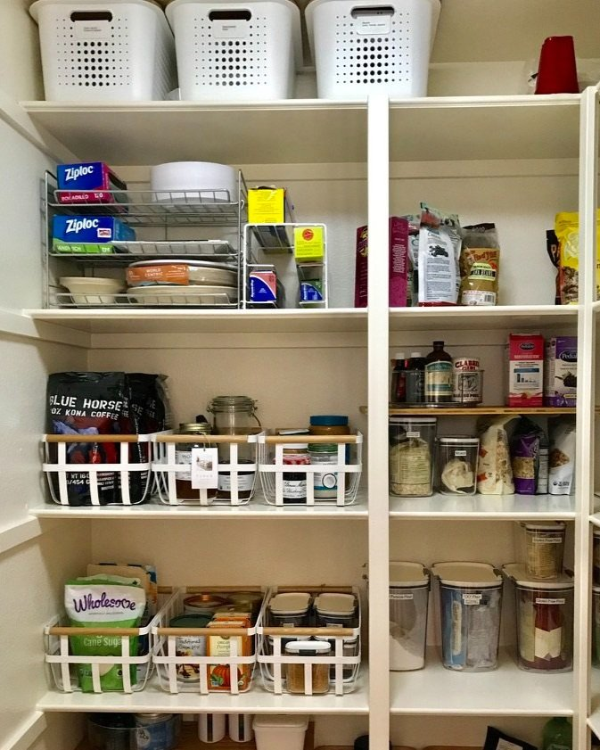
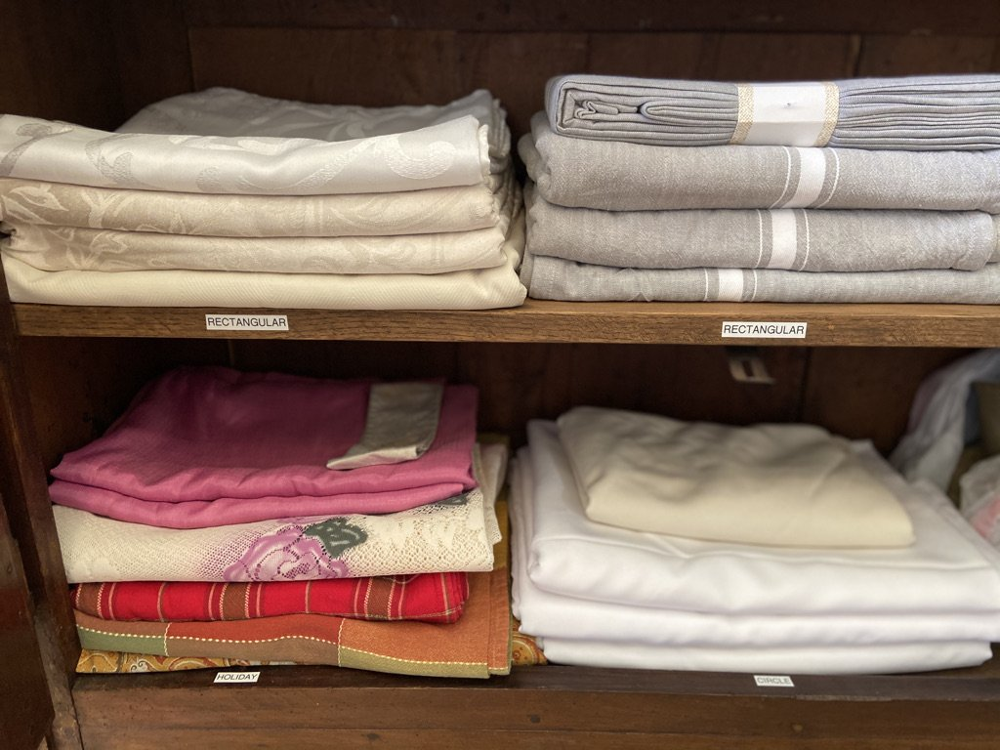

Most Common ‘Zones’ for Kitchen Organization
Organizing your kitchen into zones can significantly improve its efficiency and make daily tasks more manageable. Here are some of the most common kitchen zones to consider when organizing:
Prep Zone: This is where you'll do most of your meal preparation. It includes your countertop space, cutting boards, knives, mixing bowls, measuring cups, and other tools needed for chopping, slicing, and dicing.
Cooking Zone: In this area, you'll find your stove, oven, pots, pans, spatulas, and other cooking utensils. Keep potholders, oven mitts, and kitchen timers handy here as well.
Baking Zone: If you enjoy baking, dedicate a zone for your baking supplies. This includes mixing bowls, measuring spoons and cups, baking sheets, cookie cutters, and ingredients like flour, sugar, and baking powder.
Utensil Zone: Store your cooking utensils like spatulas, ladles, tongs, and wooden spoons in this zone. Drawer dividers can help keep these items organized.
Our favorite kitchen productsDishware Zone: Keep your dishes, glasses, and cutlery organized in this zone, typically near the dishwasher or drying rack for easy unloading and access.
Pantry Zone: If you have a pantry, organize it with different shelves or sections for canned goods, dry goods, spices, snacks, and more. Use clear containers and labels for easy identification.
Cleaning Zone: Store your cleaning supplies like dish soap, sponges, scrub brushes, and trash bags under the sink or in a nearby cabinet. Keep trash and recycling bins in this area for easy disposal.

Appliance Zone: Designate a space for your kitchen appliances like the microwave, toaster, blender, and coffee maker. This zone should have access to electrical outlets.
Coffee or Beverage Zone: If you're a coffee or tea lover, create a zone with your coffee maker, mugs, tea bags, and other beverage-related items.
Kids' Zone: If you have children, consider a zone with child-friendly dishes, snacks, and easy-to-reach items they may need.

Entertaining Zone: If you frequently entertain guests, set up a zone with linens, serving platters, wine glasses, and other entertaining essentials. Labels also help enhance and keep the space organized as well.
Storage Zone: Dedicate a space for food storage containers, lids, and wraps. Keep these items easily accessible for packing leftovers.
Remember that the key to successful kitchen organization is to tailor it to your specific needs and habits. These zones serve as a guideline, but feel free to adapt them to fit your lifestyle and the layout of your kitchen. The goal is to make your kitchen work efficiently for you and your family.